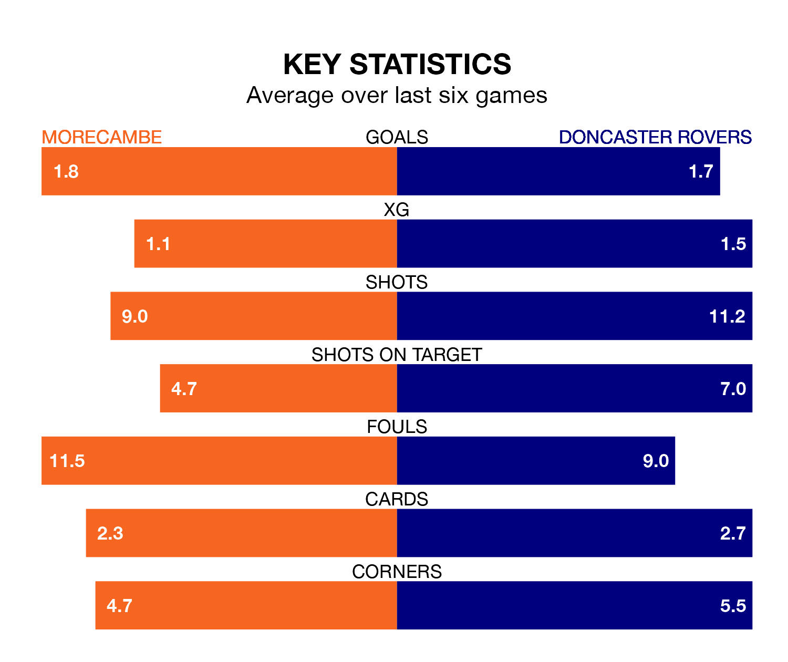

Doncaster Rovers visit Morecambe at the Mazuma Stadium on Saturday on the back of five consecutive wins in EFL League Two.
Doncaster have picked up 16 points from their last six games, and they face a Shrimps side who have also won their last two matches, and collected six points from the last possible 18.
With 54 goals in 40 games so far this season, Doncaster are scoring at below the league average rate with 1.4 goals per game. And they are conceding more than average, letting in 62 goals at a rate of 1.6 per game.
Morecambe, meanwhile, are average scorers, with 1.5 goals per game. They have conceded 1.7 goals per game.
The Shrimps are eighth in the table after 41 games, of which they have won 17 and drawn nine, earning 60 points.
Rovers are six places behind the hosts in 14th, with 16 wins and seven draws putting them on 55 points.
In the last three years, Morecambe and Doncaster have played each other on three occasions. Morecambe won two of them and Doncaster one.
Their last meeting was on December 16, when Morecambe won 5-0 away.
Morecambe's last match was on Monday, a 2-1 win against Barrow, with David Tutonda and Gwion Edwards getting the goals for the Shrimps.
Doncaster beat Wrexham 1-0 last time out, on Tuesday, with Owen John Edward Bailey on the scoresheet.
Saturday's match will be refereed by Darren Drysdale, who has taken charge of 13 EFL League Two games so far this season, issuing one red card and booking 50 players. He has awarded five penalties.
The last Morecambe game Drysdale refereed was a 2-2 away draw with Bradford City on December 26. His last Doncaster match was their 1-0 win at home against Grimsby Town on October 28.
Updated: 16:41 (UTC), 04/04/24